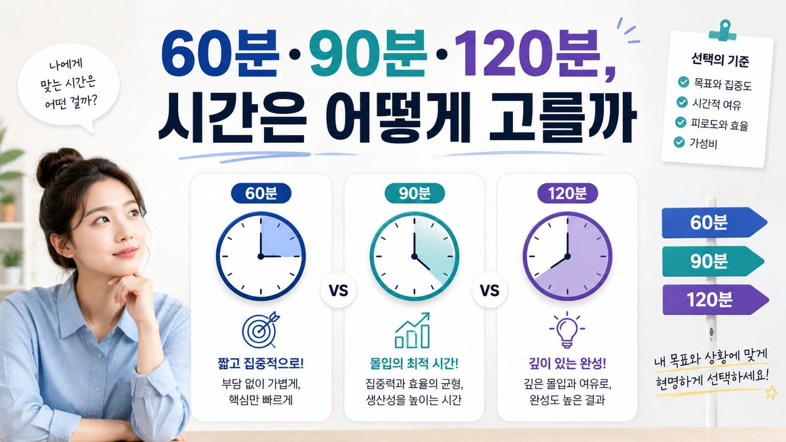

“60분, 90분, 120분 중에 뭘 골라야 하나요?” 출장마사지 예약에서 코스만큼 자주 나오는 고민입니다. 시간은 단순히 ‘길수록 좋다’가 아니라, 관리할 수 있는 부위의 범위와 직결됩니다. 67 마사지 현장 기준으로, 시간대별로 실제 무엇이 가능한지 솔직하게 정리했습니다.
관리는 준비(컨디션 체크·자세 잡기)와 마무리(스트레칭·정리)에 양 끝 시간이 들어갑니다. 그래서 실제 손이 몸에 닿는 시간은 표기 시간보다 짧다고 보는 게 현실적입니다. 시간을 늘린다는 건 곧 ‘더 넓은 부위를, 더 천천히’ 다룬다는 의미입니다.
목·어깨·등처럼 가장 불편한 한 구역을 집중적으로 풀기에 적합합니다. 전신을 골고루 받기에는 빠듯해서, “여기만 확실히 풀고 싶다”는 목적이 분명할 때 효율이 좋습니다. 평일 퇴근 후 짧게 회복하고 싶은 직장인이 가장 많이 고르는 시간입니다.
현장에서 만족도가 가장 안정적인 시간입니다. 등·허리·다리·목·어깨를 한 바퀴 돌면서도, 뭉친 곳은 한 번 더 짚을 여유가 생깁니다. “전신을 받고 싶은데 한 군데는 특히 신경 써 달라”는 가장 흔한 요구에 딱 맞습니다. 처음이라 시간을 정하기 어렵다면 90분이 무난한 기본값입니다.
전신을 충분히 돌고도 정체된 부위를 깊게 다룰 시간이 남습니다. 누적 피로가 심한 주말, 장거리 출장 뒤, 또는 평소 한 시간으로는 ‘아쉬웠다’던 분께 권합니다. 시간이 길어 몸이 완전히 이완되며 그대로 잠드는 경우가 많아, 일정이 없는 날 받는 것이 좋습니다.
같은 90분이라도 어디에 시간을 쓰느냐에 따라 결과가 다릅니다. 예약 시 ‘집중 부위’와 ‘빼도 되는 부위’를 함께 말씀해 주시면, 한정된 시간을 불편한 곳에 더 배분할 수 있습니다. 예를 들어 “발·종아리는 가볍게, 등·허리에 시간을 더”처럼요. 시간을 길게 잡고도 골고루 ‘얕게’ 받으면 오히려 아쉬울 수 있으니, 시간 선택과 함께 배분을 정하는 것을 권합니다.
가끔 ‘큰맘 먹고’ 받는 분은 120분으로 한 번에 풀고 싶어 하지만, 2~3주 간격으로 꾸준히 받는 분은 90분을 기본으로 두고 컨디션이 나쁜 주에만 120분으로 올리는 편이 효율적입니다. 몸이 이미 어느 정도 관리된 상태에서는 60~90분으로도 충분히 유지가 되기 때문입니다. ‘유지’가 목적이면 짧게 자주, ‘회복’이 목적이면 길게 가끔이 원칙입니다.
두 분이 함께 받는 경우, 같은 시간이라도 준비·안내에 시간이 조금 더 들어갑니다. 두 분 다 충분히 받고 싶다면 90분 이상을 권합니다. 또 한 분은 강하게, 다른 분은 약하게처럼 선호가 다르면 예약 때 각각 알려주시는 게 좋습니다.
같은 90분이라도 스웨디시로 전신을 순환시키는 것과, 딥티슈로 허리를 깊게 다루는 것은 체감이 다릅니다. 시간만 정하기보다 ‘무엇을(코스) 얼마나(시간)’를 함께 정하면 후회가 적습니다. 예를 들어 ‘딥티슈는 한 부위에 집중하므로 60분도 가능’, ‘전신 아로마로 푹 쉬고 싶다면 90분 이상’처럼 목적과 코스에 맞춰 시간을 고르면 됩니다. 코스 선택이 어려우면 예약 때 컨디션을 말씀해 주세요. 시간과 코스를 함께 안내해 드립니다.